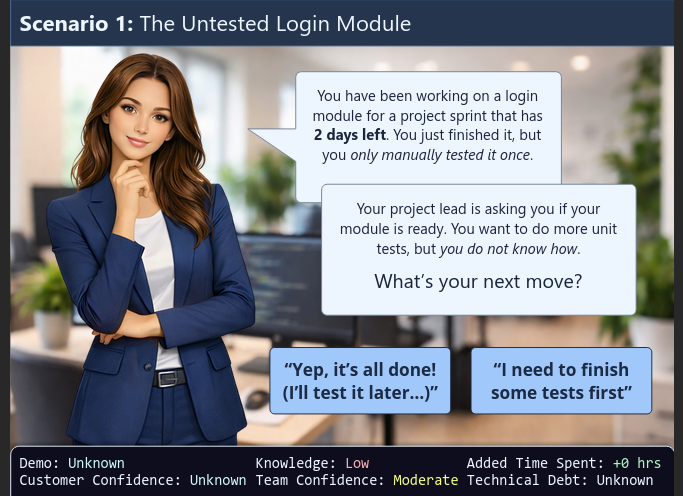

TARDIS Engineering Onboarding
An interactive branching scenario designed to accelerate new software engineer onboarding by simulating realistic workplace challenges and decision-making processes.
Purpose: Address the extended onboarding timeline and knowledge gaps experienced by new engineering hires at TARDIS Corporation by providing hands-on practice with common workplace scenarios before they encounter them in production environments.
Target Audience: Newly hired software engineers with varying levels of professional experience joining TARDIS Corporation's development teams.
Project Objectives: By completing this module, new engineers will be able to navigate common workplace scenarios, apply company protocols for communication and problem-solving, and demonstrate readiness to contribute to team projects with minimal supervision.
Responsibilities: Instructional designer (needs analysis, scenario design, branching logic, development, visual design)
Format: Interactive e-learning module with branching scenarios
Duration: Approximately 45-60 minutes (self-paced)

Created with Articulate Storyline 360
The Problem
TARDIS Corporation's Human Resources department identified a recurring pattern: new software engineers consistently required 6-8 months to reach full productivity, significantly longer than the industry standard of 3-4 months. Exit interviews and performance reviews revealed that new hires struggled with implicit company knowledge-unwritten protocols for communication, problem-solving approaches, and navigating the organizational culture.
While technical skills were strong, new engineers reported feeling uncertain about when to escalate issues, how to balance independent problem-solving with seeking help, and navigating cross-team communication. This resulted in duplicated effort, delayed project timelines, and frustration for both new hires and their team leads.
The Solution
After conducting stakeholder interviews with engineering managers, team leads, and recently onboarded engineers, I designed a branching scenario module that simulates five common workplace situations new engineers encounter during their first 90 days.
Rather than presenting static information about company policies, the module places learners in realistic scenarios where they must make decisions, see the consequences of their choices, and receive immediate contextualized feedback. Each scenario includes multiple decision points, creating a safe environment to practice judgment without real-world consequences.
The branching structure allows learners to explore different approaches and understand why certain strategies are more effective than others in the TARDIS engineering culture.
My Process
Analysis
I began with a needs analysis, interviewing six engineering managers, four team leads, and eight engineers who had joined within the past year. I also reviewed onboarding documentation, performance review data, and exit interview summaries provided by HR.
Key findings revealed that technical training was adequate, but new hires lacked practical experience with soft skills and company-specific cultural norms. The most common challenges centered around communication timing, escalation protocols, documentation standards, and cross-functional collaboration.
Design
Based on the analysis, I identified five critical scenarios that would give new engineers practice with the most common decision points:
- Handling an ambiguous bug report from QA
- Managing competing priorities from multiple stakeholders
- Deciding when to ask for help versus continue independent troubleshooting
- Navigating communication with a difficult cross-functional partner
- Responding to an urgent production issue during regular development work
Each scenario was designed with 3-5 decision points and multiple possible outcomes, including optimal paths, suboptimal but acceptable approaches, and clearly problematic choices. Feedback was calibrated to explain not just what was wrong, but why certain approaches work better in TARDIS's specific engineering culture.
Development
I developed the module in Articulate Storyline 360, creating realistic mockups of TARDIS's internal tools (Slack, Jira, email) to increase authenticity. Each scenario branch was reviewed by subject matter experts to ensure technical accuracy and cultural alignment.
Before full deployment, I conducted usability testing with three recent hires and two engineering managers, iterating on feedback clarity, scenario complexity, and pacing.
Implementation & Evaluation
The module launched as part of TARDIS's standard onboarding sequence for new engineering hires. Evaluation followed the Kirkpatrick Four-Level Model to get a realistic picture of how well it was working, not just whether people liked it.
End-of-module surveys from the first cohort of 12 engineers averaged 4.6 out of 5.0, with scenario realism and branching cited most often in open comments. Several engineers noted that being able to make mistakes without real consequences was something they hadn't experienced in previous onboarding. On the learning side, decision-pathway data from SCORM reporting showed 83% of learners reached an optimal resolution on their first or second attempt, and self-reported confidence scores on key scenarios improved meaningfully from pre- to post-assessment.
At the 90-day mark, engineering leads rated module completers noticeably higher on proactive communication and peer-review engagement than the prior cohort, a behavior-transfer indicator consistent with Phillips ROI methodology. Six months out, onboarding-related escalations to senior staff dropped by roughly a third. Those results were enough for the L&D team to recommend expanding the module to mid-level lateral hires.